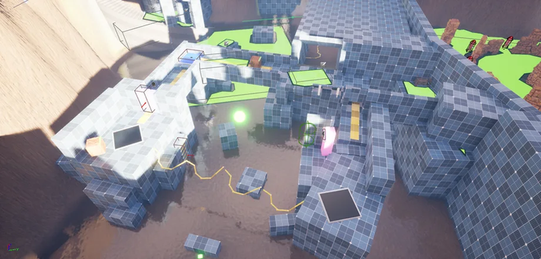
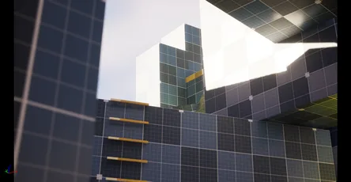

01Context
Learn the engine through one level
The purpose of this project was to learn the level building tools that are common in Unreal Engine 5. I applied the essential level design techniques in a single project, from the first document to a playable build.
The challenge that I set for myself: make a circular level and guide the player around the main objective at the centre.
- Project
- Workshop project, single player
- Engine
- Unreal Engine 5
- Genre
- Third-person action adventure
- My role
- Level designer
- Development time
- 3 months
- Play time
- About 25 minutes
02The mission
An archaeologist, an artifact and a race
The player is John Smith, an archaeologist. He must find an artifact hidden in the ruins of an ancient civilisation. The artifact has immense power and must not fall into the wrong hands. Other people search for it too: when the mission starts, the player can see helicopters in the distance.
The mission takes place on an island in the Caribbean Sea. The player starts on a beach, crosses the jungle and climbs a rocky slope to find the ancient tower. Mercenaries guard the courtyard in front of the temple. To open the tower, the player must solve a puzzle. When the player takes the artifact, reinforcements arrive, and the player must escape to the extraction point.
Main objectives
- Find the entrance to the temple.
- Get the grappling hook.
- Fight waves of enemies.
- Solve the puzzle that opens the way to the temple.
- Solve the puzzle that protects the artifact.
- Escape from the island.
Side objectives: collect treasures, explore the jungle abyss, and finish the mission without being seen.
03Layout
A loop around the temple
The temple at the centre is the landmark and the goal. The route goes around it in a circle, so the player always knows the direction of the objective. Sightlines to the temple open and close along the loop, and the grappling hook gives new ways to cross the jungle.
Before the blockout, I made the full set of planning documents: a level flow chart, a pacing graph, a bubble diagram, a 2D map and the golden path.



04Gameplay
Combat, puzzles and traversal
Items. The player gets a new item, the grappling hook, which opens the environment for free exploration. The weapons are a rifle and a pistol. Treasures are the collectible items.
Puzzles. Falling platforms, and a pushable object with a pressure plate. The first puzzle area changes into a combat area without warning on the first visit.
Combat. The combat zone supports three different approaches. A second combat area follows the circular concept on a smaller scale and gives a dynamic alternative.



05Post mortem
What worked and what did not
The loop worked, but it became repetitive. The player always knew where to go. But a constant walk in one direction around a circle became tedious, and it removed the feeling of being lost, which is important for a jungle. It also limited the size of the jungle area.
A possible fix: a tower at the centre that the player moves through or around, along the radius of the circle, with regular visits to its lower levels. This would also solve a second problem: it was difficult to keep the temple interesting from all sides.
The linear parts were the strongest. At the temple entrance the layout becomes more linear, and the basic level design rules were easier to apply. The combat zone and the first puzzle area turned out well.
Next time: I started with a fixed circular outline, and this outline caused the limits above. In future levels, I start more open and let the layout grow from play.